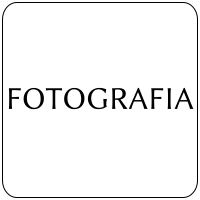

Archivo:Image placeholder.svg
De WikiEVA

{kind=link}
Tamaño de esta previsualización: 200 × 200 píxeles. Otra resolución: 240 × 240 píxeles.
{kind=link}
{kind=link}
Archivo original (archivo SVG, nominalmente 200 × 200 píxeles, tamaño de archivo: 8 KB)
Historial del archivo
Haz clic sobre una fecha/hora para ver el archivo a esa fecha.
| Fecha y hora | Miniatura | Dimensiones | Usuario | Comentario | |
|---|---|---|---|---|---|
| actual | 21:48 28 jul 2012 | 200 × 200 (8 KB) | Marco Gaiani (Discusión | contribuciones) |
- No puedes sobrescribir este archivo.
Usos del archivo
Hay más de 100 páginas que enlazan con este archivo. La lista siguiente sólo muestra las primeras 100 páginas que enlazan con este archivo. También puedes consultar la lista completa.
- Adelophryne gutturosa
- Aparasphenodon venezolanus
- Bolitoglossa altamazonica
- Bolitoglossa borburata
- Bolitoglossa orestes
- Caecilia flavopunctata
- Caecilia subnigricans
- Caecilia tentaculata
- Ceuthomantis cavernibardus
- Craugastor biporcatus
- Dendropsophus battersbyi
- Dendropsophus luteoocellatus
- Dendropsophus marmoratus
- Dendropsophus meridensis
- Dendropsophus microcephalus
- Dendropsophus minusculus
- Dendropsophus minutus
- Dendropsophus parviceps
- Dendropsophus pelidna
- Dendropsophus sarayacuensis
- Dendropsophus yaracuyanus
- Dischidodactylus colonnelloi
- Dischidodactylus duidensis
- Eleutherodactylus johnstonei
- Epicrionops niger
- Flectonotus fitzgeraldi
- Flectonotus pygmaeus
- Gastrotheca helenae
- Gastrotheca nicefori
- Gastrotheca ovifera
- Gastrotheca walkeri
- Gastrotheca williamsoni
- Hyloscirtus estevesi
- Hyloscirtus jahni
- Hyloscirtus lascinius
- Hyloscirtus platydactylus
- Hypsiboas albomarginatus
- Hypsiboas alemani
- Hypsiboas benitezi
- Hypsiboas boans
- Hypsiboas calcaratus
- Hypsiboas cinerascens
- Hypsiboas crepitans
- Hypsiboas geographicus
- Hypsiboas hobbsi
- Hypsiboas lanciformis
- Microcaecilia rabei
- Myersiohyla aromatica
- Myersiohyla inparquesi
- Myersiohyla loveridgei
- Nectocaecilia petersii
- Pipa arrabali
- Pipa parva
- Pipa pipa
- Potomotyphlus kaupii
- Pristimantis anolirex
- Pristimantis anotis
- Pristimantis avius
- Pristimantis bicumulus
- Pristimantis boconoensis
- Pristimantis briceni
- Pristimantis cantitans
- Pristimantis colostichos
- Pristimantis ginesi
- Pristimantis incertus
- Pristimantis kareliae
- Pristimantis lancinii
- Pristimantis lentiginosus
- Pristimantis marmoratus
- Pristimantis melanoproctus
- Pristimantis memorans
- Pristimantis mondolfii
- Pristimantis nicefori
- Pristimantis paramerus
- Pristimantis pleurostriatus
- Pristimantis prolixodiscus
- Pristimantis pruinatus
- Pristimantis pulvinatus
- Pristimantis reticulatus
- Pristimantis riveroi
- Pristimantis rozei
- Pristimantis stenodiscus
- Pristimantis telefericus
- Pristimantis terraebolivaris
- Pristimantis tubernasus
- Pristimantis turumiquirensis
- Pristimantis vanadise
- Pristimantis vilarsi
- Pristimantis yaviensis
- Pristimantis zeuctotylus
- Siphonops annulatus
- Stefania ginesi
- Stefania goini
- Stefania marahuaquensis
- Stefania oculosa
- Stefania percristata
- Stefania riae
- Stefania satelles
- Stefania scalae
- Stefania schuberti
{kind=link}
{kind=link}
{kind=link}
{kind=link}
{kind=link}
{kind=link}